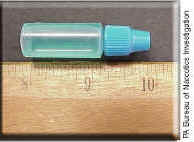

Que es el LSD y sus consecuencias
LSD son las siglas en inglés de la dietilamida de ácido lisérgico. Esta es una droga ilegal que se presenta en forma de polvo blanco o de un líquido claro sin color. Está disponible en forma de polvo, líquido, tableta o cápsula. El LSD normalmente se ingiere por vía oral. Algunas personas lo inhalan por la nariz (aspirado) o lo inyectan en una vena (disparado).
Los efectos del LSD en el cerebro
El LSD es una droga psicoactiva. Eso significa que actúa sobre el cerebro (sistema nervioso central) y cambia su estado de ánimo, su comportamiento y la manera en la que se relaciona con el mundo a su alrededor. El LSD afecta la manera en la que actúa un químico cerebral llamado serotonina. La serotonina ayuda a controlar el comportamiento, el estado de ánimo, los sentidos y el pensamiento. El LSD es parte de un tipo de drogas llamado alucinógenos. Estas son sustancias que provocan alucinaciones. Las alucinaciones son cosas que usted ve, escucha o siente estando despierto que parecen reales, pero en lugar de serlo, han sido creadas por la mente. El LSD es un alucinógeno muy poderoso. Basta solo una cantidad muy pequeña para provocar las alucinaciones. Las personas que usan LSD llaman a sus experiencias alucinógenas "viajes". Según la cantidad que se tome y la manera en la que responda, un viaje puede ser "Bueno" o "malo". Un buen viaje puede ser estimulante y placentero. Un mal viaje puede ser muy desagradable y atemorizante.
El peligro del LSD es que sus efectos son impredecibles. Eso significa que, al usarlo, no sabe si tendrá un buen viaje o un mal viaje. No hay manera de saber cómo le afectará:
Cómo se consume el LSD?
El LSD normalmente se toma por vía oral. La droga es incolora e inodora pero tiene un sabor ligeramente amargo.
|  |
Quiénes usan el LSD?
El LSD lo usan personas de todas las edades. Datos de la National Household Survey on Drug Abuse (Encuesta Nacional de los Hogares acerca del Abuso de Drogas) indican que unos 20,2 millones de residentes de los Estados Unidos de 12 años de edad o más usaron LSD al menos una vez en la vida. La encuesta reveló asimismo que muchos adolescentes y adultos jóvenes usan LSD: 742.000 personas entre 12 y 17 años y 4,5 millones de personas entre 18 y 25 años usaron la droga al menos una vez. El uso del LSD entre los alumnos de la enseñanza media presenta un problema especial. Más del 8 por ciento de los estudiantes de último año de la enseñanza media en los Estados Unidos usaron la droga al menos una vez en la vida, y cerca del 4 por ciento la usó durante el año precedente, según la encuesta Monitoring the Future (Vigilancia del Futuro) realizada por la Universidad de Michigan.
{kind=link}
{kind=link}
{kind=link}
{kind=link}